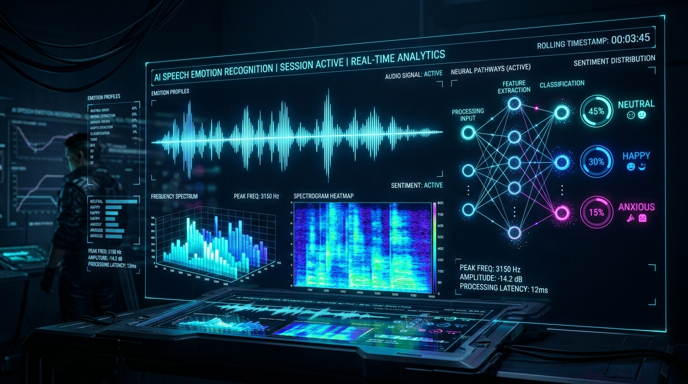
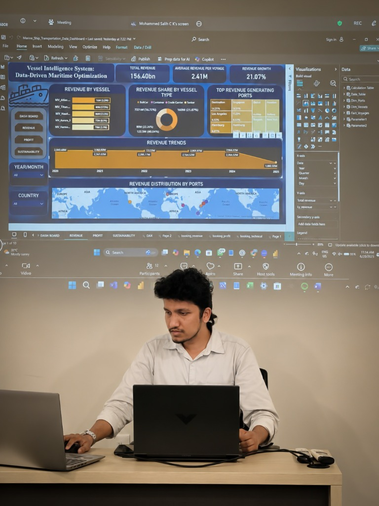
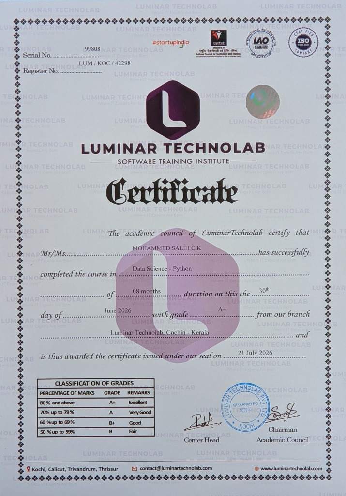
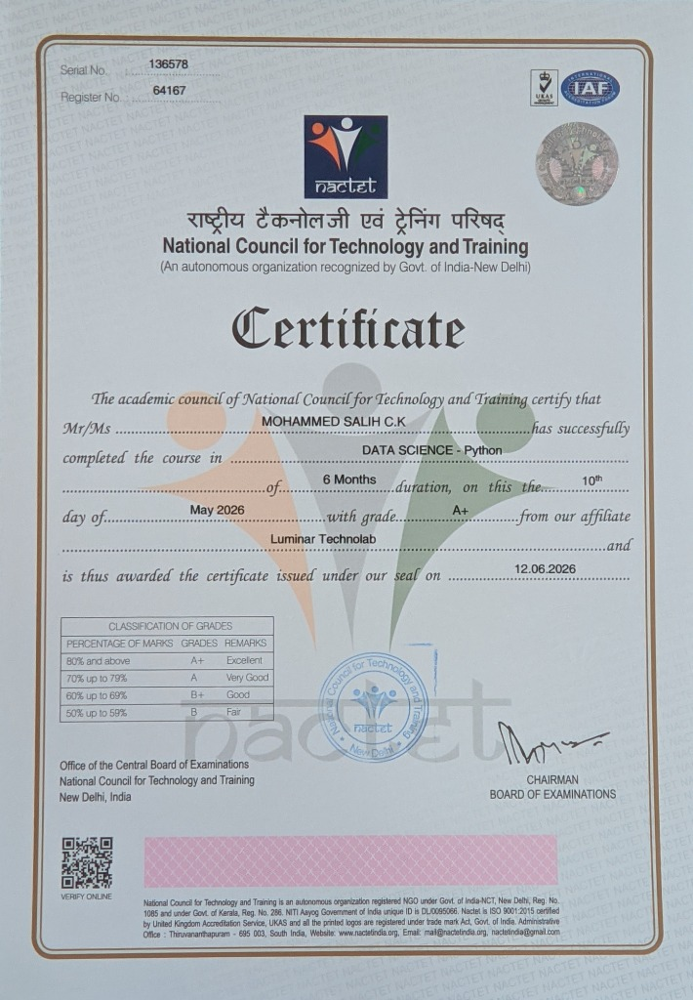

Speech Emotion Recognition System
Deep learning speech classifier recognizing 8 emotional states (RAVDESS dataset) using Librosa audio feature extraction (MFCC, Chroma, Tonnetz) and optimized CNN architectures.
Passionate AI and Machine Learning Engineer with hands-on experience in developing and implementing multiple real-world projects. I translate complex research-level concepts in Computer Vision, NLP, and Generative AI into highly functional, real-world applications.
Bridging the gap between AI research and practical software systems
Passionate AI and Machine Learning Engineer with hands-on experience in developing and implementing multiple real-world projects using Python, SQL, Machine Learning, Deep Learning, and Generative AI.
Skilled in building intelligent systems, predictive models, and AI-driven applications that solve practical problems. Strong ability to transform complex data into meaningful insights and innovative solutions.

Technologies and methodologies I leverage daily
Explore a selection of my research-to-reality applications

Deep learning speech classifier recognizing 8 emotional states (RAVDESS dataset) using Librosa audio feature extraction (MFCC, Chroma, Tonnetz) and optimized CNN architectures.

Automated vehicle detection, automatic number plate recognition (ANPR), and SQL database integration to streamline toll processes and clear road congestion without physical barriers.

Real-time anomaly classifier built on the UNSW-NB15 dataset. Screens incoming packets using Random Forest algorithms, achieving an outstanding accuracy rate of 95%.

A real-time image processing classifier that detects face coverings on live webcam streams to facilitate public safety and automated compliance checks.

Predictive clinical diagnostic classification system using Sequential artificial neural network (ANN) models to evaluate patients' cardiovascular risk.

Binary classification model based on patient attributes to predict lung cancer likelihood, optimized with Tensorflow Sequential ANN layers.

A foundational ML classification project executing iris flower clustering and categorization to showcase core pipeline metrics, data split, and model accuracy.
Moments in action • Technical presentations, development workflow, and data intelligence
 Tech Presentation
Tech Presentation
Delivering insights on binary anomaly classifiers, attack recall maximization, and machine learning pipelines.
Hands-on model development, algorithmic problem solving, and building scalable full-stack AI solutions.

Business IntelligenceDesigning interactive analytics dashboards for data-driven maritime optimization and revenue trends.
Verified professional credentials and specialized industry training in Data Science & AI

Successfully completed an intensive 8-month hands-on curriculum encompassing Python programming, Exploratory Data Analysis, Machine Learning, Deep Learning (ANN/CNN/RNN), Computer Vision (OpenCV/YOLO), and Artificial Intelligence systems.

National Council technical certification certifying proficiency in Data Science with Python with an outstanding Grade A+ (80% and above), recognized by the Government of India New Delhi autonomous framework.
Academic qualifications and background
CGPA: 7.66 / 10
CGPA: 6.8 / 10
Let's discuss collaborations, projects, or job opportunities
Feel free to reach out to me directly or connect through my social links.
{kind=link}
{kind=link}